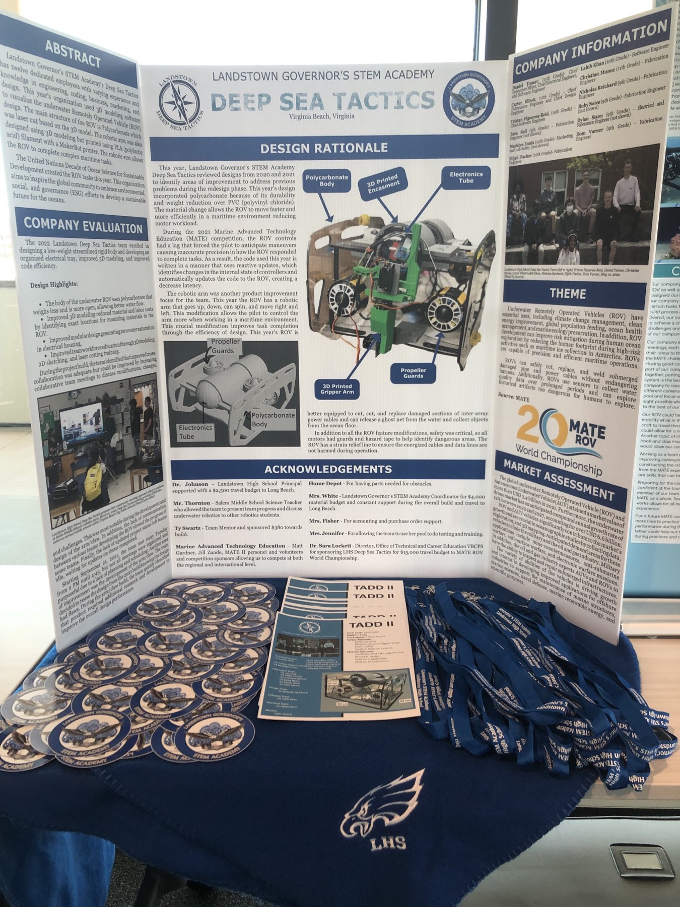
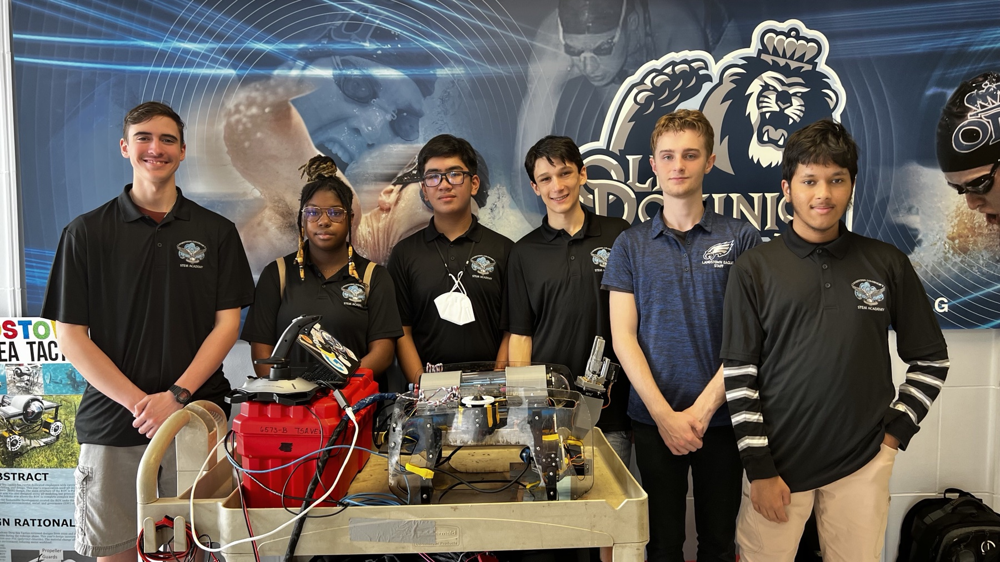

The robot for the 2022 season, TADD II
The world of underwater robotics is a dynamic and challenging field, and in 2022, the Mid-Atlantic Regional and the 20th World Championship of the MATE ROV Competition provided a thrilling platform for teams to showcase their innovative designs and problem-solving skills. Among the many talented teams that participated, Deep Sea Tactics, a team I was proud to be a part of, secured first place in the Mid-Atlantic Regionals and went on to the 20th World Championship.
The Mid-Atlantic Regional
Deep Sea Tactics, a dedicated team of high school engineers and scientists began their journey with a shared vision - to design a remotely operated vehicle (ROV) capable of navigating the intricate challenges of the underwater world. The Mid-Atlantic Regional competition, held in May at Old Dominion University, was our first test. As a team, we entered the competition with unwavering determination, each of us bringing our unique skills and passion to the table.
The Mid-Atlantic Regional competition posed a series of real-world challenges that tested our ROVs in various aspects, including precision, efficiency, and adaptability. These challenges ranged from inspecting underwater infrastructure to collecting water samples and manipulating objects underwater. Together, we tackled each challenge with a combination of technical prowess and teamwork, the bond between us growing stronger with every obstacle overcome. It was a proud moment when we secured the coveted first-place position. Our success was a testament to our countless hours of hard work, dedication, and innovative thinking.

Daniel holds the first place trophy for the Mid-Atlantic Regional
Preparing for the World Championship
After our stellar performance at the Mid-Atlantic Regionals, we knew that we were ready to face the best teams from around the world at the 20th World Championship. The pressure was on us to refine our ROV further and prepare for the challenges that awaited us on the international stage.
The months leading up to the World Championship were a whirlwind of innovation, teamwork, and late-night brainstorming sessions. Each team member played a crucial role, and my own contributions felt like pieces of a larger puzzle. We sought guidance from mentors and experts in the field, which not only improved our ROV but also gave us a deeper appreciation for the broader community that supports underwater robotics.
The 20th World Championship
The 20th World Championship of the MATE ROV Competition brought together teams from different corners of the globe, all vying for the title of world champion. The competition featured a diverse set of challenges that demanded not only technical expertise but also teamwork, problem-solving skills, and adaptability.
Deep Sea Tactics faced fierce competition, with teams presenting impressive ROVs and innovative solutions to the underwater challenges. The World Championship tested our abilities to their limits, pushing the boundaries of what our ROV could achieve. While we didn't secure the top position, finishing 22nd, however, experience was invaluable. It taught us important lessons about resilience, sportsmanship, and the need to continuously improve.
The Marketing Presentation board at the World Championship
Conclusion
Being part of the Deep Sea Tactics team in the 2022 MATE ROV Competition was a journey of a lifetime, filled with challenges, triumphs, and unforgettable moments of camaraderie. While we didn't claim the top prize at the World Championship, the experience has left a lasting impact on each team member, and it serves as a reminder of the limitless potential of young engineers and scientists in the field of underwater robotics.
The team at the Mid-Atlantic Regional hold the first place trophy